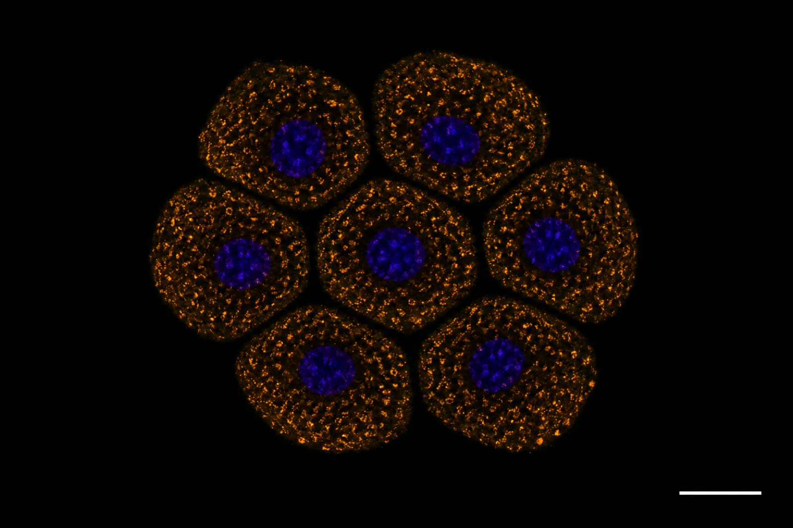

El mismo islote desconectado · las placas ya no están

Qué se ve
El verde desapareció de todos los bordes. Las células siguen ahí y se cuentan igual en la histología. Ya no tienen por dónde ponerse de acuerdo.
Y el ámbar sigue con la misma intensidad: los gránulos de insulina están llenos. No les falta insulina. Les falta la conexión para soltarla a la vez.
Σint = Ktotal − Σ Kj
En la lámina anterior, Σint > 0 — el islote conectado resuelve mejor que la suma de sus células. En esta, Σint = 0 — es exactamente la suma de sus células.
Y las células son las mismas en las dos imágenes. Lo único que cambió está entre ellas.
Representación en el estilo de la inmunofluorescencia confocal